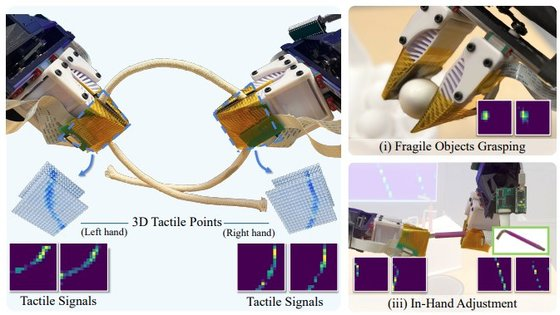

3D-ViTac
Low-cost touch improves fine-grained manipulation.
CoRL 20242024.10 · CoRL 2024 · FlexiTac V1
3D-ViTac: Learning Fine-Grained Manipulation with Visuo-Tactile Sensing
3D-ViTac fuses low-cost, flexible tactile sensors and vision into a unified 3D representation for diffusion policies, enabling precise bimanual manipulation that outperforms vision-only methods. Built on FlexiTac V1 (16×16 taxels at 3 mm).
Paper